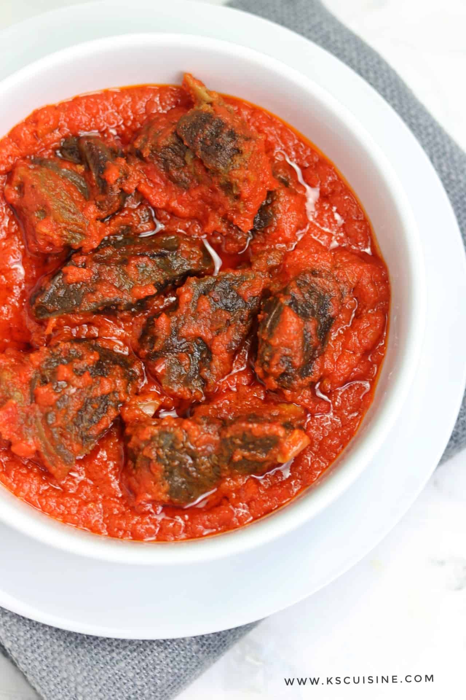

Simple Lasagna Recipe

Ingredients:
- garlic cloves, peeled (DO NOT SMASH)
- extra virgin olive oil
Instructions:
- Submerge cloves in saucier with olive oil
- Cook on lowest heat until cloved are golden brown and easily smooshable
- Save roasted garlic, store garlic oil